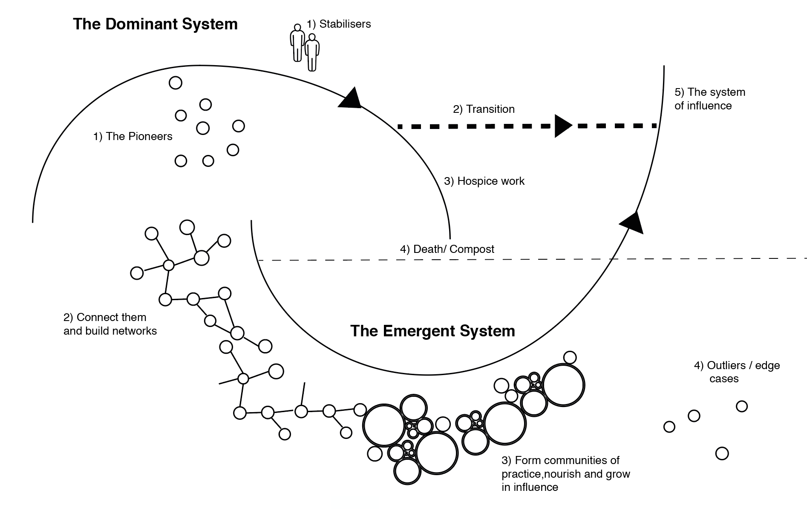

How we organize shapes the work that we do
Interactive implications tutorial at the ACM FAT* 2020 Conference
The work within the Fairness, Accountability, and Transparency of ML (fair-ML) community could positively benefit from understanding the role of organizational culture and structure in the effective practice of fair-ML efforts of individuals, teams, or initiatives within industry. In this tutorial session we will explore various organizational structures and possible leverage points to effectively intervene in the process of development and deployment of AI systems towards contributing to positive fair-ML outcomes.
What could the organizational culture that exist in the Aviation Industry teach us about the possibilities for shared accountability and shared responsibility in the field of AI?
We looked at how automation was introduced in the field of Aviation, specifically how agency and responsibility is split between the different actors involved. For example, the pilot of an aircraft, the operators at the Air Traffic Control station on the ground, as well as the manufacturer of the aircraft engine, all bare the responsibility. In 1967, a National Transportation Safety Board was established in the US where the "go-team" model was introduced.
The "go-team" model employs a rotating task-force of 8-12 experts trained in technical, policy, social-science, media, forensic, and community management matters. The multi-faceted quantitative and qualitative data that this task-force generates feeds back to industry stakeholders to improve airline safety and to inform government stakeholders so they can improve the relevant infrastructure, such as Air Traffic Control systems.
The NTSB was involved in the investigation of a recent fatal self-driving vehicle accident, producing an over 400 page report including findings and recommendations.
What could the organizational culture that exist in the Space Industry teach us about the possibilities for shared accountability and shared responsibility in the field of AI?
"One person’s mistake is everybody’s mistake.
In Space, if you make a mistake … it’s more the organization that did not see the possible mistake, it did not put in place all the blocks for that mistake not to happen or to be caught at the beginning."
See:
- Clancey, W. J., Sierhuis, M., Seah, C., Buckley, C., Reynolds, F., Hall, T., Scott, M. (2008) Multi-agent simulation to implementation: A practical engineering methodology for designing space flight operations. In A. Artikis, G. O'Hare, K. Stathis, & G. Vouros (Eds.), Engineering Societies in the Agents' World VIII. Athens, Greece, October 2007. Lecture Notes in Computer Science Series, Volume 4870. Heidelberg Germany: Springer, pp. 108-123.
- Clancey, W. J., Sierhuis, M., Alena, R., Berrios, D., Dowding, J., Graham, J.S., Tyree, K.S., Hirsh, R.L., Garry, W.B., Semple, A., Buckingham Shum, S.J., Shadbolt, N. and Rupert, S. (2007) Automating CapCom using Mobile Agents and robotic assistants. NASA Technical Publication 2007-214554. Washington, D.C.
Teams are interdependent [1] and the best teams are highly interdependent [2]. Interdependence is associated with innovation [3,4] however the state of interdependence relies on multiple factors including adaptability, integration, reducing uncertainty, and focus [5].
References:
- [1] Cooke, N. J., & Hilton, M. L. (Eds.). (2015). Enhancing the effectiveness of team science. Washington, DC: National Academies Press.
- [2] Cummings J. Team Science Successes and Challenges. National Science Foundation Sponsored Workshop on Fundamentals of Team Science and the Science of Team Science.
- [3] Lawless, W. F. (2017). The entangled nature of interdependence. Bistability, irreproducibility and uncertainty. Journal of Mathematical Psychology, 78, 51-64.
- [4] Lawless, W. F. (2017). The physics of teams: interdependence, measurable entropy, and computational emotion. Frontiers in Physics, 5, 30.
- [5] Lawless, W. F., Mittu, R., Sofge, D., & Hiatt, L. (2019). Artificial Intelligence, Autonomy, and Human-Machine Teams: Interdependence, Context, and Explainable AI. AI Magazine, 40(3).
There are many books that have been influential in the field of Management and Organizational Science. Some of the references we found helpful include:
- Wheatley, M. J., & Rogers, M. E. (1998). A simpler way. Berrett-Koehler Publishers.
- Horowitz, Ben. (2019). What You Do Is Who You Are: How to Create Your Business Culture. New York: Harper Business.
- Coffman, C., & Sorensen, K. (2013). Culture Eats Strategy for Lunch: The Secret of Extraordinary Results. Igniting the Passion Within (Denver, Colo., 2013).
Ethnography, and the many disciplines that count ethnography as a core method, provide crucial perspectives on the topics within fair-ML work, by illuminating the context and interconnected relationships surrounding algorithmic systems. As explored by scholar Nick Seaver in his work on critical algorithmic studies, ethnography could enable practitioners to "enact algorithms not as inaccessible black boxes, but as heterogeneous and diffuse sociotechnical systems, with entanglements beyond the boundaries of proprietary software" [1]. The "scavenging ethnographer", he describes, has developed an understanding of algorithms not as singular technological objects but rather as "culture" because they are composed of collective human practices. Considering how people enact algorithms through their actions requires the development of reflexive practices recognizing that "any model of social behavior is inseparable from the social context and research methods from which it was produced" [2].
References:
- [1] Nick Seaver. 2017. Algorithms as culture: Some tactics for the ethnography of 326 algorithmic systems. Big Data & Society 4, 2 (2017).
- [2] Anna Lauren Hoffmann. 2019. Where fairness fails: data, algorithms, and the limits of antidiscrimination discourse. Information, Communication & Society 22, 7 (2019), 900–915.
See Also:
- R. Stuart Geiger, Dan Sholler, Aaron Culich, Ciera Martinez, Fer- nando Hoces de la Guardia, François Lanusse, Kellie Ottoboni, Marla Stuart, Maryam Vareth, Nelle Varoquaux, Sara Stoudt, and Stéfan van der Walt. "Challenges of Doing Data-Intensive Research in Teams, Labs, and Groups." BIDS Best Practices in Data Science Series. Berkeley Institute for Data Science: Berkeley, California. 2018. doi:10.31235/osf.io/a7b3m
- R. Stuart Geiger, Orianna DeMasi, Aaron Culich, Andreas Zoglauer, Diya Das, Fernando Hoces de la Guardia, Kellie Ottoboni, Marsha Fenner, Nelle Varoquaux, Rebecca Barter, Richard Barnes, Sara Stoudt, Stacey Dorton, Stéfan van der Walt. “Best Practices for Fostering Diversity and Inclusion in Data Science: Report from the BIDS Best Practices in Data Science Series.” BIDS Best Practices in Data Science Series. Berkeley, CA: Berkeley Institute for Data Science. 2019. doi:10.31235/osf.io/8gsjz
- Dan Sholler, Sara Stoudt, Chris Kennedy, Fernando Hoces de la Guardia, François Lanusse, Karthik Ram, Kellie Ottoboni, Marla Stuart, Maryam Vareth, Nelle Varoquaux, Rebecca Barter, R. Stuart Geiger, Scott Peterson, and Stéfan van der Walt. “Resistance to Adoption of Best Practices.” BIDS Best Practices in Data Science Series. Berkeley Institute for Data Science: Berkeley, California. 2019. doi:10.31235/osf.io/qr8cz
Watch the FAT* 2019 Translation Tutorial: Challenges of incorporating algorithmic fairness into industry practice.
Drawing from prior work by Michael Veale et al., investigating the challenges of practitioners operating within high-stakes public sector institutions, we see that many of them are related to organizational structure [1]. Situating the development of AI systems within different organizational cultures gives us new insights on debated FAT* issues of power imbalance, discrimination, and many others. As scholar Anna Hoffman explores in her work, "designers and engineers are limited in their ability to address broad social and systemic problems" [2] and overcoming these limits requires broader socio-technical understanding. Recent work by Andrew Selbst et al. developed a framework for identifying and mitigating the failure modes or "traps" which arise from failing to consider the interrelationship between social context and technology [3]. We build on their work and provide new perspectives on some of the concrete characteristics of the Framing Trap, the Portability Trap, and the Solutionism Trap. Our work remains focused on the complex human and algorithmic interactions [4] within the larger organizational and social context where these traps are enacted.
References:
- [1] Michael Veale, Max Van Kleek, and Reuben Binns. 2018. Fairness and accountability design needs for algorithmic support in high-stakes public sector decision- making. In Proceedings of the 2018 chi conference on human factors in computing systems. ACM, 440.
- [2] Anna Lauren Hoffmann. 2019. Where fairness fails: data, algorithms, and the limits of antidiscrimination discourse. Information, Communication & Society 22, 7 (2019), 900–915.
- [3] Andrew D Selbst, Danah Boyd, Sorelle A Friedler, Suresh Venkatasubramanian, and Janet Vertesi. 2019. Fairness and abstraction in sociotechnical systems. In Proceedings of the Conference on Fairness, Accountability, and Transparency. ACM, 329 59–68.
- [4] Bruno Latour. 2005. Reassembling the social an introduction to actor-network-theory. Oxford University Press.
See Also:
- Holstein, K., Wortman Vaughan, J., Daumé III, H., Dudik, M., & Wallach, H. (2019, April). Improving fairness in machine learning systems: What do industry practitioners need?. In Proceedings of the 2019 CHI Conference on Human Factors in Computing Systems (p. 600). ACM.
- Van de Poel, I., & Zwart, S. D. (2010). Reflective Equilibrium in R & D Networks. Science, Technology, & Human Values, 35(2), 174–199.
- Latour, B. (2014). Give me a laboratory and I will raise the world (pp. 141-70). Paris.
- Latour, B., & Woolgar, S. (2013). Laboratory life: The construction of scientific facts. Princeton University Press.
See:
- Van de Poel, Ibo, and Martin Sand. 2018. "Varieties of responsibility: two problems of responsible innovation." Synthese.
- Van de Poel, Ibo. 2018. "Design for value change." Ethics and Information Technology.
- Van de Poel, Ibo. 2013. "Translating values into design requirements." In Philosophy and Engineering: Reflections on Practice, Principles and Process, edited by D. Mitchfelder, N. McCarty and D.E. Goldberg, 253-266. Dordrecht: Springer.
- Van de Poel, Ibo, Jessica Nihlén Fahlquist, Neelke Doorn, Sjoerd Zwart, and Lambèr Royakkers. 2012. "The Problem of Many Hands: Climate Change as an Example." Science and Engineering Ethics 18 (1):49-68.
- Askell, A., Brundage, M., & Hadfield, G. (2019). The Role of Cooperation in Responsible AI Development. arXiv preprint arXiv:1907.04534.
The work within the Fairness, Accountability, and Transparency of AI community relates to the field of AI Safety and Verification. In the fields of Computer Science and Machine Learning the process of verification has been defined by ML researchers as "producing a compelling argument that the system will not misbehave under a broad range of circumstances" [1]. Traditionally, in Machine Learning research, there's a difference between testing and verification. Testing refers to evaluating the system in concrete conditions and making sure that it behaves as expected. Testing has evolved to be a major part of software development ever since its early developments in the 1950s.
"Organizations which design systems ... are constrained to produce designs which are copies of the communication structures of these organizations."
References:
- [1] Goodfellow, I.; McDaniel, P.; and Papernot, N. 2018. Making machine learning robust against adversarial inputs. Communications of the ACM61(7).
- [2] Conway, M. E. (1968). How do committees invent. Datamation, 14(4), 28-31.
See:
- Colfer, L. J., & Baldwin, C. Y. (2016). The mirroring hypothesis: theory, evidence, and exceptions. Industrial and Corporate Change, 25(5), 709-738.
- Orlikowski, W. J. (1992). The duality of technology: Rethinking the concept of technology in organizations. Organization science, 3(3), 398-427.
- Rohini Jalan, Kevin Woojin Lee, Paul Leonardi, Wanda J Orlikowski, Matthew Beane, Rohini Jalan, Kevin Woojin Lee, and Sarah Sachs. 2019. Producing Technological Futures: Reflecting on Workplace Automation, Inequality, and Ethics. Proceedings, 2019,
- Shaikh, Maha, Vaast, Emmanuelle, Barley, Stephen, Crowston, Kevin, Orlikowski, Wanda J, Shaikh, Maha, Vaast, Emmanuelle, and Yoo, Youngjin, 2017. The Work of Technologies & Technologies at Work: Implications for Organizing, Managing & Innovating. Proceedings, 2017.
- Roy, Bonitta. 2018. Sensemaking in Organizations. Organizations evolve to make better sense of complexity. Medium.
- Roy, Bonitta. 2006. The Map, the Gap, and the Territory. Integral Review.
- Roy, Bonitta. 2016. A Manifesto for the Open Participatory Organization. Medium.
ABOUT ML (Annotation and Benchmarking on Understanding and Transparency of Machine learning Lifecycles) is a multi-year, multi-stakeholder initiative led by Partnership on AI that aims to bring together a diverse range of perspectives to develop, test, and promulgate documentation best practices for transparency in machine learning by synthesizing learnings from academic research and existing practices. This is an ongoing, iterative process designed to co-evolve with the rapidly advancing research and practice of AI technology.
Further understanding the intersection of organizational culture and fair-ML work will contribute to bridging the gap between best practices and industry practitioners.
By broadening the scope of the discussion, we seek to create space for multidisciplinary and intergenerational insights to emerge. We invite all of you to participate virtually or during the ACM FAT* conference. The tutorial will be most relevant to you if you are currently involved in or interested in initiating fair-ML efforts in industry. Use the visualization above to explore and contribute to the conversation.
What to expect:
- An interdisciplinary discussion about organizational change.
- An overview of the results of an ethnographic study we conducted among industry practitioners working specifically within the fair-ML field.
- A facilitated design-thinking session where we'll do a deep dive into the themes that have emerged from the study.
Organizers
- Bogdana Rakova, Research Fellow at Partnership on AI; Data Scientist, Responsible AI at Accenture
- Jingying Yang, Program Lead, Partnership on AI
- Rumman Chowdhury, Global Lead for Responsible AI at Accenture
Use the interactive sketch above to explore the work we think will influence the discussion during the tutorial session.
Most of all, what are we missing? Use the "+" bubble to be part of this exploration and contribute your ideas and experience.
We've adopted Berkana Institute's Two Loop Theory of Change model, further explored by Cassie Robinson: 
For questions, thoughts, ideas, feedback, please reach out to us here. Thank You!